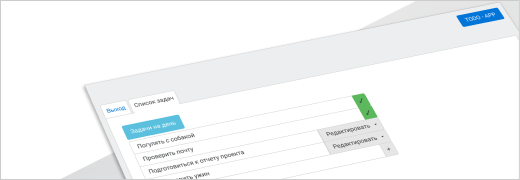

<!-- <nav class="navbar navbar-expand-sm navbar-light bg-light">
  <a class="navbar-brand" href="#">TODO-APP</a>
  <button
    class="navbar-toggler"
    type="button"
    data-toggle="collapse"
    data-target="#navbarNav"
    aria-controls="navbarNav"
    aria-expanded="false"
    aria-label="Toggle navigation"
  >
    <span class="navbar-toggler-icon"></span>
  </button>
  <div class="collapse navbar-collapse" id="navbarNav">
    <ul class="navbar-nav">
      <li class="nav-item">
        <a class="nav-link" routerLink="/sign-in"
          >LOGIN <span class="sr-only">(current)</span></a
        >
      </li>
      <li class="nav-item" routerLink="/register-user">
        <a class="nav-link" routerLink="/register-user"
          >REGISTER <span class="sr-only">(current)</span></a
        >
      </li>
      <li class="nav-item" (click)="authService.SignOut()">
        <a class="nav-link">SignOut <span class="sr-only">(current)</span></a>
      </li>
      <li class="nav-item" [routerLink]="['/todo']">
        <a class="nav-link">MAIN <span class="sr-only">(current)</span></a>
      </li>
      <li class="nav-item">
        <a class="nav-link" href="#"
          >Home <span class="sr-only">(current)</span></a
        >
      </li>

      <li class="nav-item">
        <a class="nav-link" href="#">Features</a>
      </li>
      <li class="nav-item">
        <a class="nav-link" href="#">Pricing</a>
      </li>
      <li class="nav-item">
        <a class="nav-link disabled" href="#" tabindex="-1" aria-disabled="true"
          >Disabled</a
        >
      </li>
    </ul>
  </div>
</nav> -->
<!--  -->
<div class="header d-flex flex-row justify-content-end ">
  <div class="logo my-2">ANGULAR_APP</div>
</div>
<div class="container-fluid custom-bg">
  <div class="container custom-main">
    <div class="d-flex flex-column">
      <ul class="nav nav-tabs">
        <li class="nav-item" *ngIf="!authService.isLoggedIn">
          <a
            class="nav-link"
            href="#"
            routerLink="/sign-in"
            routerLinkActive="active"
            >Вход</a
          >
        </li>
        <li class="nav-item" *ngIf="authService.isLoggedIn">
          <a
            class="nav-link"
            href="#"
            (click)="authService.SignOut()"
            [routerLink]="['/log-in']"
            routerLinkActive="active"
            >Выход</a
          >
        </li>
        <li class="nav-item" *ngIf="authService.isLoggedIn">
          <a
            class="nav-link"
            href="#"
            [routerLink]="['/todo']"
            routerLinkActive="active"
            >Список задач</a
          >
        </li>
      </ul>

      <!-- //картинка видна если не авторизирован -->
      <div *ngIf="!authService.isLoggedIn" class="mx-auto text-center">
        
      </div>

      <router-outlet> </router-outlet>
    </div>
  </div>
</div>
